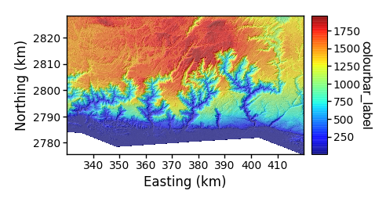
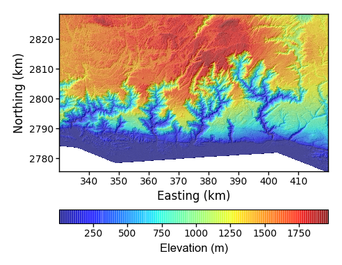
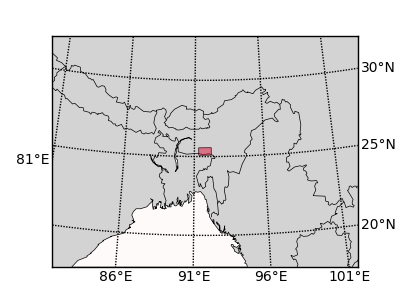
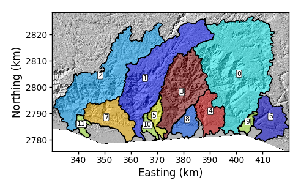
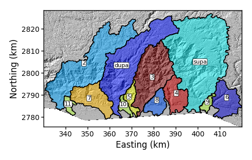
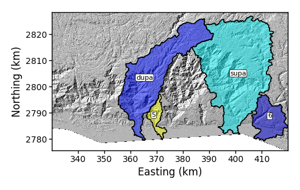
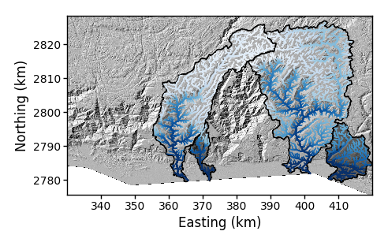
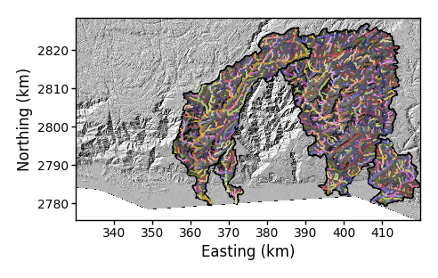

1. Introduction to LSDTopoTools visualisation
LSDTopoTools ingests data, digests it, and then produces gleaming, steaming new datasets. The number crunching that goes on inside of LSDTopoTools programs is there to help you understand your study area. But LSDTopoTools does not provide a graphical user interface: it just spits out numbers. Frequently these numbers are in binary format. To look at the data you need to visualise it.
There are two common ways to visualise data produced by LSDTopoTools.
-
Use a Geographic Information System (GIS). QGIS or ArcMap will do. The main difference betwen these packages is that one is free and open source (QGIS) and one is very very very expensive. LSDTopoTools output is designed to be compatible with both of these GIS packages.
-
Use our python plotting packages, including LSDMappingTools. These live in their own github repository.
1.1. Should I use a GIS or python?
If you are just starting out with LSDTopoTools, you probably want to use a nice, friendly GIS that has shiny buttons and icons and lets you pan and zoom and do all those nice things.
If you want to inspect individal data points you really need to use a GIS.
However, there are some disadvantages to using a GIS, which is why we wrote LSDMappingTools.
-
You have to click a bunch of buttons to get a certain formatting, and if you are loading diffent datasets there are more buttons to click. After you have done thousands of analyses requiring clicking each time, having to click these buttons begins to get very, very tedious. In fact it can get close to driving you mad and you might start muttering to strangers on the street or plants. Eventually you realise that you are clicking buttons so much that it would actually be more time efficient to learn the nuances of geospatial data visualisation using python than to keep clicking buttons. This leads you to write scripts to automate the visualisation process. This is not a hypothetical story, it acutally happened. LSDMappingTools automates plotting of LSDTopoTools output so you don’t have to click so many buttons.
-
You want to reproduce a plot. Because a GIS involves lots of presing of buttons and clicking of mice, it is difficult to reproduce the exact same figure twice. Have we mentioned how much we hate clicking buttons? Our philosophy is that science should be reproducible. So we have written scripts to guarantee that two users with the same data can produce exactly the same plot.
-
You want a plot that is formatted for a publication. Have you ever submitted a manuscript with figures that you have spent hours perfecting in Inkscape or Illustrator or iPaidAShittonToAppleGraphix and then reviewers ask you to change the figure or add some data? Isn’t that annoying? What if you wrote scripts where all the sizing, fonts, colouring, etc was exactly the way you want it so if the data changes you can just run a script again and you get a perfect figure without having to click buttons in Inkscape? We thought that would be great so we did it ourselves.
We now use LSDMappingTools regularly to make our figures. For some analyses, our plotting routines have been streamlined to the extent that you can get publication-ready figures in one python call. Sounds great, doesn’t it?
Well, there are some serious drawbacks to using python and LSDMappingTools:
-
The scripts require loads of interdependant python packages. It means that not only is installation a pain but it also takes up a lot of space (you need to download about a GB of python packages to get everything working). We have, however, spent a lot of time experimenting with different installation techniques and we have settle on Docker since you can just grab the pre-built container from Docker Hub. Loads of people are switching from languages like c++ to python since python is soooo easy to use and portable. We love python. It is easy to use. But I will throw my book "The c++ programming language" by Bjarne Stroustrup at anyone who claims that python is more portable than c++.
-
If things go wrong it helps a lot to be good at Matplotlib. This has a steep learning curve.
-
I am afraid our python repositories are a mess. Every now and then we try to clean these up but the documentation and organisation leave a lot to be desired. We are sorry about this.
If you think you are going to be using LSDTopoTools frequently in your research or work we would recommend taking the time to get the python tools working. If you just need a single result for a simple problem (i.e., you just want drainge area or a channel network) then look at LSDTopoTools output in a GIS.
2. Using a GIS to look at LSDTopoTools data
LSDTopoTools outputs both raster and vector data. If you don’t know what those are please see our section on geospatial data.
If you want specific instructions for loading data please see our QGIS section.
2.1. Raster data
Our raster datasets are in the ENVI bil format. We like this format because it is simple but contains all the georeferencing information you need to load it into a GIS.
-
The ENVI bil format can be read by both ArcMap and QGIS.
-
You can convert it to other formats using GDAL. Note that QGIS has GDAL built in.
2.2. Vector data
LSDTopoTools also produces vector data. This vector data is almost always point data. Points with locations and attributes are printed to file, and you need to get this into your GIS. LSDTopoTools outputs point data in two formats:
-
csv format: This is comma separated value.
-
Most of our csv data files include the latitude and longitude of the points.
-
If you import csv data into a GIS, you need to tell it the coordinate system. If the csv file has latitude and longitude headers, the coordinate system is WGS-84 which is the same as EPSG:4326
-
-
Geojson format. Some of our LSDTopoTools programs allow you to convert csv files into geojson files.
-
Geojson files contain georeferencing, so you can load them as victor data directly into a GIS: you don’t need to tell the GIS what coordinate system the data is in.
-
Geojson data is also compatible with many web mapping formats, like d3.js or leaflet.
-
Unfortunately, Geojson files are huge so if you are processing big datasets and are writing geojson data you will very quickly end up filling your hard disk!
-
3. Installing the LSDTopoTools python toolchain
So you have tried looking at LSDTopoTools output and are prepared to try our fancy python scripts. I am afraid before you can use these you are going to have to install our python toolchain.
There are two options for this: * Easy way Get our docker visualisation container * Hard way install the conda environment using miniconda
3.1. Easy way: The LSDTT docker visualisation container
-
You need to have LSDTT_installation.html#_installing_docker[Docker installed].
-
Pull and run the docker visualisation container:
$ docker run -it -v C:\LSDTopoTools:/LSDTopoTools lsdtopotools/lsdtt_viz_docker -
Run a little script:
# Start_LSDTT.sh -
You need to navigate into the LSDMappingTools directory:
# cd /LSDTopoTools/LSDMappingTools -
You are ready to go!
3.2. Hard way (native linux) using miniconda and an environment
This is a quick guide. There are many options for setting up python but this is our preferred setup.
-
Download and install miniconda on your host machine. You want the python 3 version for your operating system.
-
Open a command prompt (Windows) or terminal (Mac-OS or Linux)
-
Get our environment file. There are two you might use:
-
python3_environment.ymlis for Linux but is possibly more portable. -
LSDMT_version_0.2.2.txtis a functioning version that works in a 64 bit Linux environment -
If you are in Windows, try the
python3_environment.yml. Otherwise, try the other one.
-
-
Download the appropriate file onto your computer.
-
Create the environment from that file with:
-
If you are using
LSDMT_version_0.2.2.txt:$ conda create --name LSDMT --file LSDMT_version_0.2.1.txt -
If you are using
python3_environment.yml$ conda env create -f python3_environment.ymlI’m afraid this will take a little while.
-
-
Activate the environment:
> activate LSDTT -
You also need to clone the LSDMappingTools repository. Make a directory for it an use:
$ git clone https://github.com/LSDtopotools/LSDMappingTools.git
3.3. Super hard way: setting up python without an environment file
| This is an alternative to the previous two sections! You don’t need to do this if you have either got the docker container or if you have used the environment file. |
-
The best way to install python is miniconda. Use the python 3 version.
-
Once you have installed miniconda, you can go into a command prompt (windows) or terminal (MacOS and Linux) and get the other stuff you need. To get the command prompt in windows look for the cmd.exe program.
-
You should create a python environment for LSDTopoTools. This will keep the LSDMappingTools dependencies separate from your other python installations so we don’t break your other python stuff. Read about conda python environments here:
> conda create --name LSDTT > conda activate LSDTTAfter doing this you should see the name of the environment on your termial or command prompt:
(LSDTT) > -
Now we start by updating conda and adding a bunch of standard packages. There are specific versions in the following instructions because some of the packages are in conflict and we have got to a functioning version through a lot of painful experimentation so you don’t have to. Note that these instructions might go out of date but a functioning version can be scraped from our dockerfile
> conda install -y -c conda-forge conda=4.6.14 > conda config --add channels conda-forge > conda config --set channel_priority strict > conda install -y git python=3.6.7 > conda install numpy scipy matplotlib pandas -
Now install the geographic tools
> conda install -y gdal geopandas shapely fiona rasterio pyproj cartopy descartes utm -
In Linux/MacOS, you should also be able to install
ffmpeg, which we use to animate things.> conda install -y ffmpeg -
Every time you use our tools, you should activate the LSDTT python environment.
3.4. Fixing python gdal in windows
If you are using windows, there is a stupid bug in the conda gdal package where it cannot find the gdal data (this was updated in 2018 so it might be fixed by now). To fix this:
-
Search for the file gcs.csv. Note the folder in which it is located. On my system it is in
C:\Miniconda2\Library\share\gdal -
Go into the control panel, go to system (or system and security, then system), click on advanced system settings and in system variables enter a new variable: GDAL_DATA. For the value of this enter the directory where the gdal data is that you found above.
4. Basic LSDTopoTools visualisation
Okay, we are going to take you through some basic visualisation using LSDMappingTools.
4.1. Getting our LSDMappingTools and other tools
This repeats information from the python installation section.
You can either use our Docker container (easy) or install on your native system (more difficult and takes a long time).
4.1.1. Starting up in our docker container
-
If you are using our docker implementation (this is recommended), start the container and go to the correct folder:
$ docker run -it -v C:\LSDTopoTools\:/LSDTopoTools lsdtopotools/lsdtt_viz_docker # Start_LSDTT.sh # cd /LSDTopoTools/LSDMappingTools/Tests
4.1.2. Starting up in a native python environment
-
If you installed the LSDMT environment on your host machine:
> activate LSDTT-
In windows you will need to be in a
cmd.exewindow. -
In linux or MacOS you might need to type
source activate LSDTTto get the environment to work. -
If the environment is loaded you should see it in parentheses before the command prompt, e.g.,
(LSDTT) >or(LSDTT) $. -
Navigate to the folder in the
LSDMappingToolsrepository calledTests.
-
-
Call the
LSDMappingTools_test.pypython script. This script is called with a single number: 1,2 or 3. These make different plots.
4.2. A note on the test datasets
The examples in this section are all from the Tests folder in LSDMappingTools. The raster datasets are all in ENVI bil format, which include a bil file and a hdr file. The
-
WA.bil: The topographic raster -
WA_HS.bil: hillshade -
WA_AllBasins.bil: A raster map of the basins -
WA_all.csv: A channel network generated by theprint_chi_data_maps: trueflag. See LSDTopoTools basic usage documentation for details -
A python script for testing some basic plots:
LSDMappingTools_test.py
These datasets have all been generated by LSDTopoTools. You can read about how to generate them in the LSDTopoTools basic usage documentation.
4.3. Your first LSDMappingTools plots
The good news here is that installing the LSDTT python toolchain is more difficult than creating your first plot. If your python environment is working you are already most of the way there!
We will walk through this example using the command line. You need to use the operating system within which you installed the LSDTT python environment. If you don’t know what that is read the installation section.
The first plots are really just to test if your environemnt is working. But we will give you a bit of information about how the scripts work after you produce the plots.
The scripts here print figures to files; you will not see a window with a figure pop up. Instead, after you run the scripts, look in the Tests directory and open the png files.
|
4.3.1. A basic draped hillshade
To begin, you must either be in our docker container or you must have activated our python environment on your host machine. If you don’t know how to do that, read the installation instructions.
The first test creates a very basic draped hillshade. The "drape" is an elevation raster draped over a hillshade. For obvious reasons it needs a elevation raster and a hillshade raster:
# python LSDMappingTools_test.py 14.3.2. A hillshade with some basins
This creates a very basic hillshade with some basins plotted. It needs the elevation, hillshade, and basin raster, and a _BasinInfo.csv file (all of which are included in the test data folder):
# python LSDMappingTools_test.py 14.3.3. A hillshade with some channels
This creates a very hillshade with a channel network. The channels come from a csv file that is derived from a chi data map. You can read about how to generate these in our LSDTT basic analysis documentation.
# python LSDMappingTools_test.py 14.3.4. What these basic plots do
To understand what these basic plots are doing, we will highlight some of the basic elements of the script. You should have a basic understanding of python. If you don’t, we can recommend the extremely useful courses from either software carpentry or code academy.
Firstly, we are going to import a package called LSDMapWrappers. This is a small package that automates the most basic plots: simple draped hillshades, basin plots and channel plots.
The lines of code below appear in the script LSDMappingTools_test.py.
import LSDMapWrappers as LSDMWLater in the script there are a few options:
if argv[0] == 1:
print("Getting basic hillshade")
LSDMW.SimpleHillshade(DataDir,DataFname)
elif argv[0] == 2:
print("Plotting some basins")
LSDMW.PrintBasins(DataDir,DataFname)
elif argv[0] == 3:
print("Plotting the channels")
LSDMW.PrintChannels(DataDir,DataFname)You should see here that there are various types of plots from LSDMapWrappers. As it turns out each of these different basic plots has a number of options. For example, here is the code in LSDMapWrappers:
def SimpleHillshade(DataDirectory,Base_file, cmap = "jet", cbar_loc = "right", size_format = "ESURF", fig_format = "png", dpi = 250):
"""
This function makes a shaded relief plot of the DEM with the basins coloured
by the basin ID.
Args:
DataDirectory (str): the data directory with the m/n csv files
Base_file (str): The prefix for the m/n csv files
cmap (str or colourmap): The colourmap to use for the plot
cbar_loc (str): where you want the colourbar. Options are none, left, right, top and botton. The colourbar will be of the elevation.
If you want only a hillshade set to none and the cmap to "gray"
size_format (str): Either geomorphology or big. Anything else gets you a 4.9 inch wide figure (standard ESURF size)
fig_format (str): An image format. png, pdf, eps, svg all valid
dpi (int): The dots per inch of the figure
Returns:
Shaded relief plot. The elevation is also included in the plot.
Author: FJC, SMM
"""You can see that these functions take the directory of the data files, a Base_file which is the name of the base raster, and a bunch of other options that allow you to modify the figure. LSDMapWrappers assumes that different map layers have specific names (it sacrifices flexibility for ease) so if your base raster is called WA.bil then it expects the hillshade to be called WA_HS.bil and the basin raster to be called WA_AllBasins.bil1, for example.
5. LSDTopoTools visualisation from command line
In this section we are going to use some more flexible tools which you call from a command line. If you work with LSDTopoTools and LSDMappingTools on a day to day basis, these are the scripts that you will call.
5.1. Getting the example data
The data we will use in this section comes with the full LSDTopoTools example data. These datasets are available in a repository: https://github.com/LSDtopotools/ExampleTopoDatasets
5.1.1. Getting example data in a docker container:
-
Start the docker container:
$ docker run -it -v C:\LSDTopoTools\:/LSDTopoTools lsdtopotools/lsdtt_viz_docker -
Run a script to grab and unpack the data:
$ Get_LSDTT_example_data.sh -
The data for these examples is in
/LSDTopoTools/data/ExampleTopoDatasets/ChiAnalysisData/Meghalaya
5.1.2. Getting the data in your native system
-
Find a place to put the data.
-
Download and unzip the data. In a terminal you would do this:
$ wget https://github.com/LSDtopotools/ExampleTopoDatasets/archive/master.zip $ unzip master.zip
5.2. What is in the example data
There are many datasets in the example data, but in the directory you will be using, we will focus on a specific location.
The data is based on a series of catchements draining the southern side of the Shillong Plateau in India, one of the wettest places on Earth. The data we will use has been derived from using our channel steepness tools, but we won’t make you run the code, we simply provide the processed data.
These are:
-
Mega_divide.bil: The topographic raster -
Mega_divide_hs.bil: hillshade -
Mega_divide_AllBasins.bil: A raster map of the basins -
Mega_divide_AllBasinsInfo.csv: A comma separated value file that contains information about the basins. It is generated using theprint_basin_raster: trueoption in our chi mapping tools. -
Mega_divide_Maskedchi.bil: A raster that contains the chi coordinates of this landscape. -
Mega_divide_chi_data_map.csv: A csv file containing information about the channel network. It contains information like the area location, stream order, basin number, source number and chi coordinate of the extracted channel network. This comes from using the chi mapping tool with the optionprint_chi_data_maps: true.
5.3. Getting LSDMappingTools
You also need to get LSDMappingTools. See the section Installing the LSDTopoTools python toolchain. Please don’t just skim that section, it contains important information that is essential for getting the tool working properly.
However, if you are in the Docker container, just update LSDMappingTools by running Start_LSDTT.sh.
5.4. A slightly different way to make plots
In the previous section, we made some plots by calling plotting routines in the package LSDMapWrappers. In this section we will use a command line tool to generate plots.
The command line tool is called PlotBasicRasters.py and you give it arguments to make plots. It wraps various functions that live within several LSDMappingTools packages.
It can be used as a general plotting tool but was primarily designed to interface with output from LSDTopoTools.
The name of this script, PlotBasicRasters.py is perhaps a bit misleading because in fact you can make a large number of plots including draped plots, plots that include basins, and channel profile plots.
5.4.1. The basic structure of a PlotBasicRasters.py call
PlotBasicRasters.py is called with a number of command line arguments. Once you are used to the syntax, you should also be able to use similar packages such as PlotMOverNAnalysis.py and PlotLithoInfo.py.
The main elements of a call are:
-
The call to the actual python script:
python PlotBasicRasters.py -
The directory of your data:
-dir \My\Data\Location -
The prefix of the data files
-fname RasterPrefix
After that, there are a number of different command line options. For example:
-
-PD True: This creates a drape plot. It expects there to be a raster that has_hsafter the raster prefix. So for example if your raster prefix isXianyou need a raster fileXian.biland a hillshade rasterXian_hs.bil -
-PB True: This creates a basin plot. It expects there to be a raster that has_AllBasinsafter the raster prefix. So for example if your raster prefix isXianyou need a raster fileXian.biland a hillshade rasterXian_AllBasins.bil. In addition you need a_BasinsInfo.csvfile. This is generated with basin printing functions in some of the LSDTopoTools programs.
5.4.2. A basic hillshade using PlotBasicRasters.py
-
First, you need to either start the docker container or activate the LSDMT environment, depending on what system you are using.
-
In the docker container, you can always get the latest version of LSDMappingTools using the startup script:
# Start_LSDTT.sh -
Now, go to the LSDMappingTools directory. In the docker container, this is always at
/LSDTopoTools/LSDMappingTools -
You also need to look up the location of your data.
-
In this example we are going to use more advanced example data. You will have needed to have followed these instructions first.
-
We have a lot of different example datasets so I am afraid the path to this data is a bit long winded. Sorry. It is
/LSDTopoTools/data/ExampleTopoDatasets/ChiAnalysisData/Meghalaya-
If you are not in the docker container you will have a different path: hopefully you know where you put your data!
-
-
So, lets start with a basic call to plot the elevation over a hillshade.
-
I am going to assume you have used the docker container. Your system might differ so you’ll need to update the path names.
-
Here is the call:
$ python PlotBasicRasters.py -dir /LSDTopoTools/data/ExampleTopoDatasets/ChiAnalysisData/Meghalaya -fname Mega_divide -drape_fname Mega_divide -PD True -dpi 100
-
-
This prints a figure in the raster_plots directory. The resulting figure looks like:
Figure 4. A simple draped elevation plot-
The
-PD Trueoptions turns on the drape plotting -
The
-drape_fname Mega_dividemeans that we will just drape the elevation over the hillshade. -
The
-dpi 100option means that the dots per inch of the figure will be 100.
-
-
Why don’t we alter this figure a bit. We can change the colourbar location, or the colourbar label, for example:
$ python PlotBasicRasters.py -dir /LSDTopoTools/data/ExampleTopoDatasets/ChiAnalysisData/Meghalaya -fname Mega_divide -drape_fname Mega_divide -PD True -drape_cbar_label "Elevation (m)" -drape_cbar_loc bottom -dpi 100This figure includes some additional options:
-
-drape_cbar_label "Elevation (m)"this option lets you change the name of the colourbar label. -
-drape_cbar_loc bottomthis option allows you to move the colourbar. The options areleft,right,top,bottom, andnone. -
drape_cmap jetThe sets the colourmap. See the matplotlib documentation for all the possibilities. If you do a bit of googling you will find that in fact jet is a terrible colourbar which leads people to see patterns that aren’t there. You should consider a colourbar likecubehelix.The figure looks like this:
Figure 5. A simple draped elevation plot, with some modifications.
-
-
You may wish to play with some of the two other flags and see the results:
-
-fmt pngThis sets the vigure format. Options aresvg,png,pdf. Other amige formats will work, seematplotlibdocumentation forsavefig. -
-size ESURFThis sets the size of the figure. Or more accurately, the width of the figure. Thegeomorphologyoption is 6.25 inches wide (matplotlib uses inches as its length unit…don’t send me nasty letters in support of the metric system). Thebigoption is 16 inches wide. Everything else will default to the Copernicus (the publishing house for EGU journals) width of 4.92 inches.
-
5.4.3. Making a basemap
We made a hillshade! Great. But we don’t actually know where we are in the world. However there is an option to create a basemap to see where your raster is.
-
To call the basemap image, you can use:
$ python PlotBasicRasters.py -dir /LSDTopoTools/data/ExampleTopoDatasets/ChiAnalysisData/Meghalaya -fname Mega_divide -dpi 100 -BM True -bmrem 20The key flags here are:
-
-BM TrueThis flag simply turns on the basemap. The are printed into the directory basemap_plots. -
-bmrem 20This option sets how wide the image is. This is a multiple of the total width (or height, if that if greater) of the base raster.
-
-
The figure looks like this:
Figure 6. A simple basemap. -
You can also try to modify the latitude and longitude line spacing by mydifying the flag
-bmpsm 0.5. This is a multiplier of how many lat-long lines you want in relation to the width of the map. It uses the smaller of the width and height of the basemap. Try varying this between 0.2 and 3 and see what happens.
5.5. More complex plots with PlotBasicRasters.py
We are now going to get a bit more complex and plot some basins and channels.
The structure of the python call remain the same, we just call different flags for PlotBasicRasters.py.
5.5.1. A basic channel plot PlotBasicRasters.py
In the first example we will create a very simple channel plot.
Simply call:
$ python PlotBasicRasters.py -dir /LSDTopoTools/data/ExampleTopoDatasets/ChiAnalysisData/Meghalaya -fname Mega_divide -dpi 100 -PCh TrueThe figure looks like this:
The default of this plot is to plot the channels coloured by elevation, using a blue colour scale. Like most features of PlotBasicRasters.py there are a number of flags that can modify this plot. Many of the options involve selecting basins. So we will explore basin selection next.
5.5.2. Plotting basins
Channels conduct water, sediment and nutrients downslope, but they can also communicate tectonic signals upslope. In many landscapes they set the pace of landscape evolution. Channels are orgaonised into connected networks, contained within drainage basins.
LSDTopoTools analyses frequently involve sorting and selecting drainage basins. LSDMappingTools is designed to ingest and use the drainage basin information produced by LSDTopoTools.
-
We can start with a very basic basin plot:
$ python PlotBasicRasters.py -dir /LSDTopoTools/data/ExampleTopoDatasets/ChiAnalysisData/Meghalaya -fname Mega_divide -dpi 100 -PB True -
The resulting figure looks like this:
Figure 8. A simple basin plot. -
The basin numbering is determined algorithmically, but you might want to rename your basins. To do this, you use the
-rename_dictflag. This takes the form of a python dictionary. You have keys and values. Each key is the index of the basin (the number in the previous figure) and the value is the new name. These are separated by colons (:). To do multiple basins you separate thesekey:valuepairs with commas. Here is an example:$ python PlotBasicRasters.py -dir /LSDTopoTools/data/ExampleTopoDatasets/ChiAnalysisData/Meghalaya -fname Mega_divide -dpi 100 -PB True -rename_dict 0:supa,1:dupawhen you include the rename_dictthere should either be no spaces or the entire dictionary needs to be in quotation marks. -
The resulting figure looks like this
Figure 9. A simple basin plot with renamed basins. -
You can also select basins by using the
-basin_keysflag. If you leave this blank, it assumes you want all basins. If you include a comma separated list, it only keeps the basins you have named. The basin indices used are the original, not renamed basin indices. That is, if you are using-rename_dictyou need to keep track of the original indices of the basins. -
An example is:
$ python PlotBasicRasters.py -dir /LSDTopoTools/data/ExampleTopoDatasets/ChiAnalysisData/Meghalaya -fname Mega_divide -dpi 100 -PB True -rename_dict 0:supa,1:dupa -basin_keys 0,1,5,6 -
Again, you must ensure there are no spaces in the list because if there are, the python code will assume this is a new flag and will crash. Here is what the figure looks like:
Figure 10. A basin plot with selected basins with some renaming.
5.5.3. Plotting basins and channels
-
The basin selection algorithms work with channel plotting as well. You can do this with the
-PChflag, or alternatively you can use the-PBCflag to have some semitransparent basins under the channels.$ python PlotBasicRasters.py -dir /LSDTopoTools/data/ExampleTopoDatasets/ChiAnalysisData/Meghalaya -fname Mega_divide -dpi 100 -basin_keys 0,1,5,6 -PBC True -
The figure looks like:
Figure 11. A basin plot with selected basins with some renaming channels. -
You can also change the colouring of the channels using a flag
-SimpleChFmt. You can chooseelevation,drainage_area,source_key, orbasin_keyto colour your channels. This works with both the-PChand-PBCflags:$ python PlotBasicRasters.py -dir /LSDTopoTools/data/ExampleTopoDatasets/ChiAnalysisData/Meghalaya -fname Mega_divide -dpi 100 -basin_keys 0,1,5,6 -PBC True -SimpleChFmt source_key -
The figure looks like this:
Figure 12. A basin plot with selected basins with some renaming channels.
5.6. Other plotting options
There are actually a large number of LSDMappingTools plotting options. We are well aware that this package is rather messy. The plotting scripts that will probably be most useful are:
| Name of routine | Notes |
|---|---|
|
A number of basic plotting routines for rasters, basins, some chi profiles, basemap plots, and other functionality. |
|
The plotting routines for plotting chi profiles. These routines are tunes to work with outputs from the LSDTopoTools chi analysis routines. |